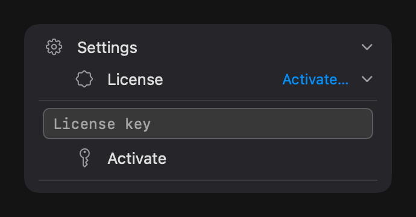
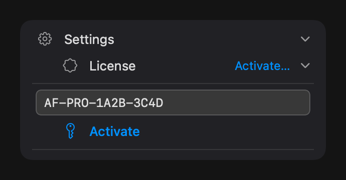
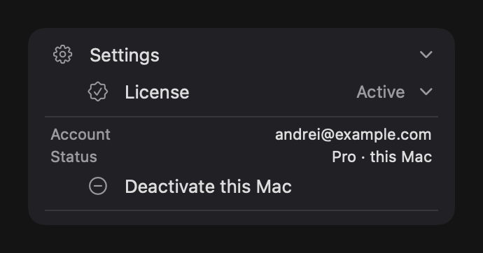

Getting started
AppFreeze is a tiny menu-bar utility that suspends background apps so they stop draining your battery and CPU — without quitting them or losing your work.
It manages your applications — the programs you opened and can see in the list — not the invisible background or system processes you never launched and don’t interact with. That separation is deliberate: AppFreeze is about the apps you chose to run, so you stay in control of them, while macOS keeps running everything it needs untouched.
Note: this documentation may differ slightly from the exact version you have installed — features ship in app updates, and the docs can trail them by a little.
Which version do I need?
There are two editions. Lite is free on the Mac App Store and is a read-only monitor: it shows you everything that’s running. Pro adds the ability to act on that list — freezing, the energy monitor, sorting, locking and the global shortcut. Pro is available through Setapp or a one-time license.
Install & first launch
- Install AppFreeze (Lite from the Mac App Store, or Pro from Setapp / your license download).
- Launch it. AppFreeze lives in the menu bar — it has no separate window. Look for its icon near the clock.
- Click the menu-bar icon to open the panel. Click it again (or click away) to close it.
Direct download: drag AppFreeze into your Applications folder, then launch it.
The panel at a glance
The panel lists your running apps. Each row shows the app, and — on Pro — its CPU and memory use, plus controls to freeze, lock or quit it. A collapsible Settings section at the bottom holds list size, Launch at Login and (Pro) the shortcut.
The AppFreeze Pro panel, open from the menu bar.
Launch at Login: turn it on in Settings so AppFreeze is ready in your menu bar every time you start your Mac.
The X / N counter Pro
— at the top-left of the list, above the app icons, a small badge shows how many
apps are frozen right now (X) out of the total in
your list (N). The first number turns blue while a
freeze mode (Freeze All or Freeze Selected) is active, and fades to a dim grey
once you switch to Unfreeze — an at-a-glance read of how much is
currently suspended. Hover it for the exact counts.
Flip Freeze All and the counter climbs 0 / 4 → 4 / 4, the
numerator lighting blue as each app freezes.
Viewing your apps
The core of AppFreeze is a live list of what’s running. This works in both Lite and Pro.
App statuses at a glance Pro
Every app in the list carries two visual cues: a coloured status dot on the left edge, and — where it matters — a small icon next to its name. Together they tell you, in one glance, exactly what AppFreeze will (or won’t) do with that app. Here’s the full set:
Hover any row and its status dot turns into a × button for quitting the app.
Switch, restore & hide
Click any app in the list to bring it to the front. If you’d minimized its window to the Dock, it comes right back. Click the same app again to hide it. It’s a fast way to jump between apps without leaving the menu bar.
Minimize to Dock on repeat click Pro
By default a second click on the same app hides it. If you’d rather it minimise to the Dock instead, flip Minimize to Dock on repeat click in the Settings section. It’s off by default — turn it on and a repeat click tucks the window into the Dock; clicking the row again brings it straight back.
Adjust the list size
Open the Settings section and use the Rows shown: N row — tap its − and + stepper to choose how many apps the list shows, anywhere from 3 to 15.
While Settings is open the list shrinks to make room for the controls; close Settings and the list springs back to the height you picked, so the panel never takes more space than you need.
Sort the list Pro
Click a column header — Name, %CPU or memory — to re-sort, ascending or descending. Sort by CPU to surface your biggest battery hogs in one click. (Lite sorts by name only.)
Quit an app Pro
Hover an app to reveal a close (×) button, or right-click the row and choose Quit. AppFreeze asks you to confirm first, so you never lose unsaved work by accident.
Freezing apps Pro
Freezing is what makes AppFreeze save battery. A frozen app is paused in place — its CPU use drops to zero — and resumes instantly when you need it.
Suspend, not quit
Freezing sends the app a SIGSTOP signal, the same primitive
macOS uses internally. The app stops where it is and its CPU drops to zero.
A SIGCONT wakes it up exactly where it left off — nothing is
killed, nothing is lost. This is why freezing isn’t possible in Lite: the App
Store sandbox won’t let an app send signals to other processes.
Freeze All vs Freeze Selected
There are two modes, and they’re mutually exclusive — you’re in one or the other:
- Freeze All — suspend every eligible background app right now. Best when you want maximum battery immediately.
- Freeze Selected — choose a set of apps once; AppFreeze keeps them frozen in the background and remembers the set. This is the “set it and forget it” mode.
Smart auto-freeze
With Freeze Selected, an app thaws automatically the moment you switch to it, and refreezes when you leave. You get the battery savings without ever thinking about it.
Quick switch from the menu-bar icon
You don’t have to open the panel to change modes. Right-click the AppFreeze icon in the menu bar for a compact radio menu — the three freeze modes are mutually exclusive, so exactly one is always checked, showing your current state at a glance:
- Unfreeze — idle: nothing is frozen and smart mode is off.
- Freeze — freeze every eligible background app right now (Freeze All).
- Freeze Selected — arm smart auto-freeze for your chosen set.
Picking a row switches straight to that mode; choosing the one that’s already checked does nothing. A left-click on the icon still just opens the panel as usual.
Energy monitor Pro
See exactly which apps are draining your battery, live, right in the panel.
Each row shows the app’s real %CPU, colour-coded by load — grey for low, yellow for medium, red for high — plus its memory use in compact units. Combine it with sort-by-CPU to find and freeze your worst offenders in seconds.
Lock & safety Pro
AppFreeze is safe by design, and Pro lets you protect specific apps from ever being frozen.
Lock an app
Right-click any app and choose Lock. A locked app is skipped by every freeze operation, no matter which mode you’re in — useful for a download, a render, or anything you need to keep running. A lock icon marks it in the list; click the lock to unlock it again.
Always safe
AppFreeze never freezes the app you’re actively using, Finder, the Dock, core system processes, or itself. A shield icon marks protected apps. Your Mac stays responsive at all times — by design.
Global shortcut Pro
Freeze without opening the panel at all.
By default, ⌥⌘F triggers freezing from anywhere. In Settings you can record your own shortcut, reset it to the default, and choose what it does — Freeze All or Freeze Selected.
- Open Settings in the panel.
- Click the shortcut field and press your key combination to record it (or Reset to return to ⌥⌘F).
- Pick the action the shortcut performs.
Activating Pro
If you bought a one-time license, here’s how to activate it. (On Setapp, Pro is unlocked automatically as part of your subscription — there’s nothing to enter.)
Trial
The direct download starts with a 14-day trial the first time you launch it — full freezing included, no key required.
Enter your license key
- Open Settings → License → Activate…
- Paste the license key from your purchase email and confirm. AppFreeze checks it online once and stores it securely in your Keychain.
- That’s it — Pro is active. There are no repeated online checks afterward; AppFreeze trusts the Keychain. One key works on about three Macs.
Settings → License → paste your key → Activate → Pro is active on this Mac.



Moving to another Mac
To free up a slot, open Settings → License → Deactivate this Mac before you stop using a machine. If a Mac is lost, you can release its slot from your Lemon Squeezy account.
If your trial ends or you deactivate a key, nothing gets stuck: AppFreeze automatically thaws everything it had frozen, so no app is ever left paused behind a paywall.
Under the hood
AppFreeze is a native macOS app built in Swift and SwiftUI. It uses only standard OS primitives — no kernel extensions, no memory cleaners, no background daemons.
SIGSTOP / SIGCONT — true Unix suspend
When you freeze an app, AppFreeze sends it a SIGSTOP signal —
the same Unix primitive the macOS kernel uses internally. The process is
suspended at the OS level: its CPU usage drops to exactly zero, but the app
stays in memory with all its state intact. SIGCONT wakes it
instantly, right where it left off. Nothing is killed, nothing is lost.
This is fundamentally different from force-quitting or memory-compressing: the app doesn't even know it was paused.
Does this actually save battery? We measured it
A suspended process burns no CPU — but how much battery does that really save?
We measured it on real hardware (CPU power via powermetrics, real
battery discharge via IOKit): freezing a busy background app cut its power draw
by about 98%, and removed roughly 85% of its real battery drain. It’s
reproducible: we built a repeatable measurement rig and documented exactly how.
See the full methodology, charts & raw
measurements →
NSRunningApplication — process discovery
NSWorkspace.shared.runningApplications gives AppFreeze the live
list of all user-visible processes. No scraping, no polling beyond the system
refresh rate, no private APIs. AppFreeze filters to
.regularActivation apps (those with a Dock icon) and excludes
system agents.
No App Sandbox in Pro
Sending SIGSTOP to another process requires leaving Apple's
sandbox. That's why Pro is distributed directly and via Setapp
— outside the Mac App Store, which mandates sandbox. The Lite version runs
fully sandboxed and only reads the process list, which doesn't require any
special permissions.
Global hotkey via Carbon RegisterEventHotKey
The customizable keyboard shortcut (default ⌥⌘F) is registered
using the low-level Carbon RegisterEventHotKey API. This works
system-wide without requiring the Accessibility or Input Monitoring
permission — which is why AppFreeze never asks for either of those just to
handle the shortcut.
License stored in the system Keychain
Your Pro license key is kept in the macOS login Keychain, not in a plain-text file or defaults database. It survives reinstalls and is never sent anywhere except the Lemon Squeezy activation endpoint at the moment you activate. AppFreeze works fully offline after activation — no always-on internet connection required.
SwiftUI + AppKit menu-bar window
The panel is a native NSPanel with SwiftUI content
rendered through NSHostingView. It floats above other windows
and dismisses on click-outside, exactly like a system popover. No web views,
no Electron, no embedded runtimes.
Permissions
AppFreeze is designed to ask for as little as possible. Freezing itself requires no user permission — only one optional feature triggers a system prompt.
Accessibility — window restore only
macOS requires the Accessibility permission for any app that programmatically raises or restores another app's windows. AppFreeze needs it for exactly one feature: restoring a minimised app from the Dock by clicking its row in the panel.
Freezing, unfreezing, switching focus, hiding, and quitting apps all work without Accessibility access. The permission is only needed if you want AppFreeze to un-minimise a window for you.
When it's requested
- The first time you click a row for an app whose window is minimised in the Dock, AppFreeze shows a one-time explanation dialog and then opens the system Accessibility prompt.
- If you click Don't allow, a gentle banner appears in the Settings panel. AppFreeze will not ask again on its own — no repeated system popups.
- The Settings panel has an Accessibility row that shows live status (Granted / Not granted) and a button to jump directly to System Settings if you change your mind later.
How to grant it
- Open System Settings → Privacy & Security → Accessibility.
- Find AppFreeze in the list and toggle it on.
- Or: click the Accessibility row in AppFreeze Settings — it opens the right pane automatically.
How to revoke it
Same path: System Settings → Privacy & Security → Accessibility → AppFreeze → toggle off. After revoking, freezing and all other features continue to work normally — only the window-restore action is disabled until you grant it again.
What AppFreeze does NOT request
- Input Monitoring — not needed. The global shortcut uses
the Carbon
RegisterEventHotKeyAPI, which is exempt from Input Monitoring. - Full Disk Access — AppFreeze never reads files.
- Contacts, Calendar, Camera, Microphone — not used.
- Screen Recording — not used. AppFreeze never captures your screen.
Small touches
A handful of smaller details that aren’t in the feature comparison but make day-to-day use smoother. Most are Pro.
The menu-bar icon shows your state Pro
The icon near the clock changes with the current freeze mode, so you can read your state without opening the panel:
When something can’t be frozen
If a freeze or quit can’t go through, AppFreeze shows a brief amber banner at the top of the panel explaining what happened, then clears itself — nothing fails silently and nothing stays stuck.
Nothing running yet
When there are no eligible background apps to show, the list displays a calm “No running apps” placeholder instead of an empty box, so you always know the panel is working.
About & help
The Settings section includes an About panel with the version number and an “AppFreeze website →” link, plus short tooltips on the controls — hover any button for a one-line reminder of what it does.
Uninstalling AppFreeze
Removing AppFreeze is a normal app uninstall — drag it to the Trash. It leaves nothing running in the background and installs no system extensions. The exact steps differ slightly between the two editions.
To uninstall: quit AppFreeze, then drag it from Applications into the Trash.
Pro (direct download or Setapp)
- Quit AppFreeze first. Click the menu-bar icon, open Settings → About (or use the panel’s quit control) and quit so no process is left running. If you froze any apps, AppFreeze unfreezes them all automatically on quit — nothing stays suspended.
- Drag the app to the Trash. Open
Applications in Finder, drag
AppFreeze.appto the Trash, and empty it. (On Setapp, open the Setapp app and choose Uninstall on the AppFreeze tile instead.) - Optional — remove settings. Your preferences live in
~/Library/Preferences/com.appfreeze.AppFreeze.plist. Delete that file if you want a fully clean removal. (Your Pro license is stored separately in the macOS login Keychain undercom.metaflowlab.appfreeze.licenseand can be left in place for a future reinstall, or removed via Keychain Access.) - Optional — revoke the permission. If you ever granted Accessibility access (used only to restore minimised windows), open System Settings → Privacy & Security → Accessibility and remove AppFreeze from the list.
No leftovers to hunt down. AppFreeze installs no launch agents, daemons, kernel/system extensions or login items beyond the optional Launch at Login toggle — which macOS clears automatically once the app is in the Trash. Dragging the app out is enough; the steps above are only for a spotless removal.
Lite (Mac App Store)
- Quit AppFreeze from its menu-bar icon.
- Remove it like any App Store app. Open
Launchpad, click and hold the AppFreeze icon until it jiggles,
then click the ✕. (You can also delete it from the
App Store app’s account/Updates list, or drag
AppFreeze light.appfrom Applications to the Trash.) - Optional — remove settings. Lite’s preferences live in
~/Library/Preferences/com.appfreeze.AppFreezeLite.plist. Lite is fully sandboxed and never requests any system permission, so there’s nothing to revoke in System Settings.
Reinstalling later? If you keep the preference file, AppFreeze picks up your list size, shortcut and other settings again on the next launch. Pro reactivates instantly from the Keychain if you left the license in place.